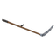

Land Clearing & the Scythe¶

The Scythe is a hand tool for clearing bushes, reeds and undergrowth off the land, to make room for bases, roads and farms. One swing cuts every clearable plant in an arc in front of you. Cut plants never grow back. It works in new worlds and in worlds you started before the update. The Scythe can't hurt creatures, players, builds, trees or stones.At a glance
- Recipe: Craftbot, 2 Wood Block + 2 Metal Block, 20 s. Known from the start: no blueprint needed.
- Reach: 2.5 m, measured to the plant's edge, and 60° either side of where you're facing (a 120° arc).
- Up to 40 plants per swing. Hold left-click to keep swinging.
- Cut plants are gone for good, and the save remembers it.
- Works in existing worlds: plants become clearable the first time you go near them.
- Multiplayer: anyone can clear, and everyone sees the result.
Getting a Scythe¶
| Crafted at | Ingredients | Time | Makes |
|---|---|---|---|
| Craftbot | 2 × Wood Block, 2 × Metal Block | 20 s | 1 Scythe |
Every world knows this recipe from the start. You don't need a Traveling Trader blueprint for it. See Recipes for the full list.
Using it¶
- Put the Scythe in your hotbar and select it.
- Look at a plant. If the Scythe can cut it, you'll see
[LMB] Cut. - Left-click to swing. Hold left-click to keep swinging, at the same pace as the sledgehammer.
At the moment the blade would hit, every clearable plant in the arc is cut down with a burst of leaves (or ash, for burnt plants).
What counts as "in front of you"¶
| Rule | Value |
|---|---|
| Reach | 2.5 m from you to the edge of the plant (big bushes count as soon as their edge is in reach) |
| Arc | 60° either side of the way you're facing |
| Height | from 1.6 m below your feet to 2.5 m above them |
| Plants per swing | 40 at most, nearest first |
| Swing rate | about one every 0.6 s, like the sledgehammer |
Plants that are very close to you (within half a metre) are cut wherever they are, even if they're beside you.
Aim at big bushes
The plant under your crosshair is always cut, even if it's a bit outside the arc. It counts if the point you're aiming at is no more than about 4.5 m away. This helps with large bushes whose middle is out of reach but whose leaves aren't.
What the Scythe cuts¶
Terrain plants¶
Cutting these gives you nothing. They're only there to be cleared.
| Kind | Includes | Cut effect |
|---|---|---|
| Bushes | wild bushes, column shrubs, buxus, boxwood | burst of leaves |
| Burnt-forest plants | burnt bushes and small burnt bushes, burnt ferns, burnt perennials, burnt thorns | ash |
| Small plants | exotic plants, pad plants, ferns, perennials, green sprouts, small birch saplings, fan sprouts, cave fluff patches | burst of leaves |
| Decorative farm plants | the corn, cucumber and eggplant plants built into farm areas | burst of leaves |
| Waterside plants | reeds, sea plants, sunflowers | burst of leaves |
| Burnt wood | fallen burnt logs, burnt stumps | ash |
You can cut reeds and sea plants from the shore or while wading.
Vanilla vegetation¶
These are broken through their own normal behaviour, so they act exactly as if you'd hit them some other way:
| Plant | Drops |
|---|---|
| Leaf piles | nothing |
| Hay piles | nothing |
| Fluff plants | nothing |
| Bacterius | nothing |
| Coral | its usual loot |
What's never affected¶
- Trees of any kind (chop them with the sledgehammer as usual), including the Giant Tree.
- Crops you pick, such as corn, cotton and pigment flowers, and anything you've planted.
- Ground grass. It's part of the terrain, not an object, so nothing can cut it.
- Stones, dirt patches, creatures, players, your builds and vehicles. The Scythe never makes a melee attack, so it can't damage anything.
Only the Scythe clears
Sledgehammers, explosions, weapons and vehicles leave terrain plants alone, as they always did.
Players still walk through bushes, reeds and ferns, and shots fly through them. Fallen logs and stumps stay solid until you cut them.
Cut plants never come back¶
Clearing is permanent. A cut plant is saved as gone with the world, and it doesn't grow back after a reload, a new day or anything else. Cleared land stays clear for your base.
Existing worlds¶
You don't need a new world. Each area's plants become clearable the first time that area loads near a player after the update. Until then they look and behave exactly as before.
- Plants stay in the same places, with the same shape, size and colour.
- In a dense area the change happens over the first few moments without a hitch, so a plant you swing at right away may not be cuttable yet. Swing again a moment later.
- If an area can't be converted for any reason, its plants just stay as normal scenery. You can't lose plants because of it.
Only the overworld is affected. Interiors and other worlds keep their plants as they are.
Multiplayer¶
- Anyone with a Scythe can clear, host or not.
- Cutting is done on the host, so every player sees the same cleared land, and it's saved with the host's world.
- Joining players only receive a small summary of which areas are converted, so a well-explored world stays quick to join. (In 1.4.0 a big world could stop friends joining; 1.4.1 fixes that. See Multiplayer.)
- Everyone should have the same Survival Frontier version. See Multiplayer.